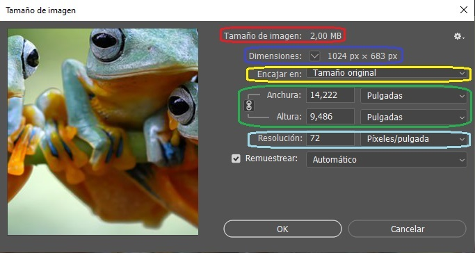

Ajuste de Lienzo y Resolución en Photoshop
Introducción
En Adobe Photoshop, el ajuste del lienzo y la resolución son dos aspectos fundamentales para trabajar con imágenes y proyectos gráficos. Comprender la diferencia entre ambos y cómo manipularlos correctamente permite optimizar la calidad y el tamaño de los archivos, asegurando resultados adecuados para impresión, web o cualquier otro medio.

Cambiar Tamaño y Resolución de Imágenes
El cambio de tamaño y resolución en Photoshop es un proceso importante que puede afectar significativamente la calidad y el uso de una imagen, hay varias implicaciones importantes que se deben considerar.
-
Definición de Términos:
-
Tamaño: Se refiere a las dimensiones físicas de la
imagen, generalmente medidas en píxeles, pulgadas o centímetros:
- Agrandar: Puede resultar en pérdida de calidad y pixelación.
- Reducir: Generalmente mantiene mejor la calidad, pero se pierde detalle.
- Resolución: Indica la cantidad de píxeles por unidad de medida, comúnmente píxeles por pulgada (ppi). A mayor resolución, más detalles puede mostrar la imagen. Las implicaciones de alterar la resolución de un imagen son:
-
Tamaño: Se refiere a las dimensiones físicas de la
imagen, generalmente medidas en píxeles, pulgadas o centímetros:
-
Implicaciones de Cambio de Tamaño:
- Agrandar: Puede resultar en pérdida de calidad y pixelación.
- Reducir: Generalmente mantiene mejor la calidad, pero se pierde detalle.
-
Implicaciones de Cambio de Resolución:
- Aumentar: No proporciona detalles adicionales reales y puede provocar que la imagen se vea borrosa.
- Reducir: Puede resultar en pérdida de nitidez.
-
Acceso a la Función Tamaño de Imagen:
- Acceso a todas las funciones de cambio de tamaño y de resolución
- Menú Principal: Imagen > Tamaño de Imagen.
- Atajo de Teclado: Ctrl + Alt + i.
-
Cambio de Tamaño: En esta ventana se tiene las siguientes
opciones:

- Tamaño de la Imagen: Muestra el tamaño o el peso de la imagen en MB o kB.
- Dimensiones: Muestra las dimensiones que tiene la imagen em el formato ancho x alto. Se puede ajustar en px, cm, mm, etc.
- Encajar en: Ajusta el tamaño de la imagen para que ocupe toda la ventana disponible sin usar barras de desplazamiento.
- Ancho y Alto: Son las medidas que tiene la imagen actualmente, lo importante es mantener el icono mantener proporciones activado, para que cualquier cambio en una dimensión se refleje proporcional a la otra. Este icono, cadena o candado, está a la izquierda de las medidas.
- Cambio de Resolución: La resolución afecta la calidad de impresión y el tamaño de la imagen en pantalla, por ello se debe tener un cuidado especial.
Expandir el Lienzo
Cambiar el tamaño del lienzo en Photoshop se refiere a ajustar las dimensiones del área de trabajo en la que se encuentra la imagen sin modificar el tamaño real de la imagen. Esto es útil cuando necesitas más espacio alrededor de la imagen para añadir elementos, o cuando quieres reducir el espacio de trabajo sin recortar la imagen.
-
Acceso a la Función Tamaño de Lienzo:
- Menú Principal: Imagen > Tamaño de Imagen.
- Atajo de Teclado: Ctrl + Alt + c.
- Ajustar Dimensiones: Modificar la dimensión deseada y, si esta es mayor que la de la imagen, la imagen será centrada automáticamente, distribuyendo el espacio sobrante equitativamente en los bordes, ya sea en los laterales o en la parte superior e inferior, según corresponda.
-
Ancla: Esta opción determina hacia dónde se
expandirá o reducirá el lienzo en relación con la imagen original. El ancla permite elegir
en qué dirección se añadirá o recortará el espacio.
Por ejemplo si se escoge la flecha hacia arriba el espacio sobrante se colocará abajo de la imagen.